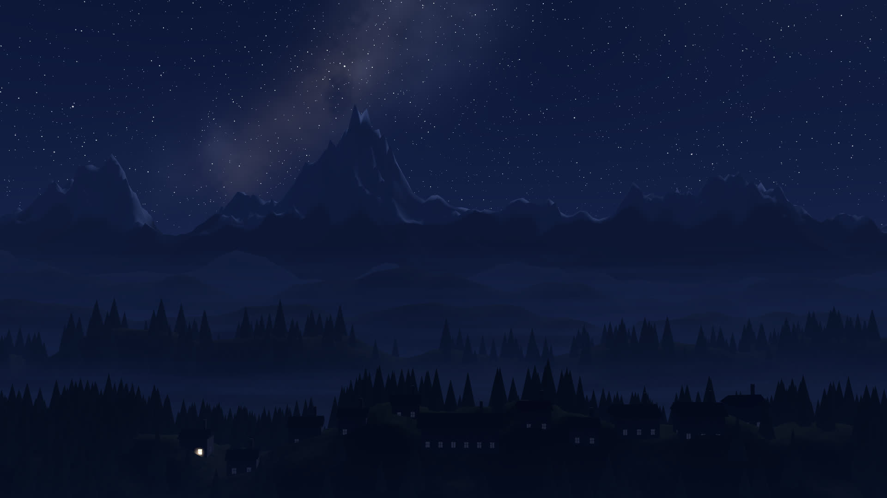

05:40 · Before first light
The range is still a rumour.
A blue hour so quiet you can hear the stream 600 metres below. Three windows are already lit: the early risers.
Portfolio project by Abhishek

Thirteen rooms on a Kumaon ridge at 2,140 metres, facing three hundred kilometres of Himalaya.
05:40 · Before first light
A blue hour so quiet you can hear the stream 600 metres below. Three windows are already lit: the early risers.
06:20 · Alpenglow
Nanda Devi follows four minutes later. Chai is at your door in a kulhad before either.
09:00 · The valley lets go
Breakfast on the deck: buckwheat pancakes, pahadi honey, eggs from Dhura village.
13:00 · Noon
Oak and rhododendron down to the village, apricot orchards on the way back. Our naturalist knows every call.
17:20 · Copper hour
The range goes amber, then rose, then a cold blue-white that holds after the valley is dark.
18:30 · Lamps
Stoves are lit at turndown. Dinner is Kumaoni, slow, and by the fire in the Long Room.
21:30 · Starlight
So the sky does what it used to. The telescope is on the Star House deck; come up after dinner.
05:40
Blue hour; the early risers’ windows are lit.
06:20
Chai at your door in a kulhad.
09:00
Breakfast on the deck.
17:20
The range goes amber, then rose.
18:30
Lamps on, stoves lit, dinner by the fire.
21:30
The telescope is on the Star House deck.
Book direct: breakfast, a 2 pm check-out and the best rate are always included. Why direct?
06:20 The ridge
11:00 On the ridge
Six things we do well, led by people who grew up on this hill. Book a slot online or at the desk.
All experiences and slots13:30 The Long Room
Chef Kamala Rawat cooks what her mother cooked: bhatt ki churkani in iron, madua roti on stone, jhangora kheer with jaggery from the plains. Half the vegetables come from our garden and the rest from Dhura. Breakfast is on the deck; dinner is at one long table by the fire, or on your own deck if you’d rather.
Menus and the kitchen garden16:10 Book direct
Travel portals keep 18 to 22 percent of every booking. When you book with us, we spend that on you instead.
Check dates and rates| What you get | Direct | Travel portals |
|---|---|---|
| Rate | Lowest, always | Same or higher |
| Breakfast | Included | Often extra |
| Check-out | 2 pm, free | 11 am |
| Changes | Free date change up to 7 days out | Depends on the portal |
| Your cottage | Choose it on the plan | Assigned on arrival |
| Talk to | The people who run the place | A call centre |
17:20 From the guest book
“We booked two nights and stayed five. On the third morning Naveen knocked at 6 to show us Nanda Devi going pink. We have the photo on our fridge.”
Ananya and Rohan · Bengaluru · October
“The quietest place I have slept in ten years. My daughter learnt aipan from Pushpa and painted our front step when we got home.”
Kavya Menon · Pune · Orchard House, May
“Saturn’s rings, through a telescope, from bed. Well, from the deck, in a blanket, with kahwa. Close enough.”
Imran and Zoya · Delhi · Star House, December
18:30 Weddings & offsites
Intimate weddings of up to 90 under the apricot trees, and leadership offsites of 12 to 30 with the Library to yourselves. One planner from the first call to the last guest’s car.
Plan a wedding or an offsite